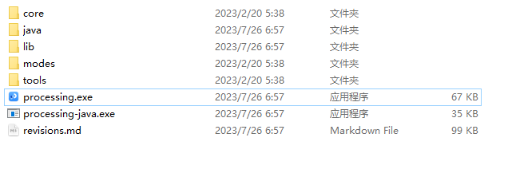
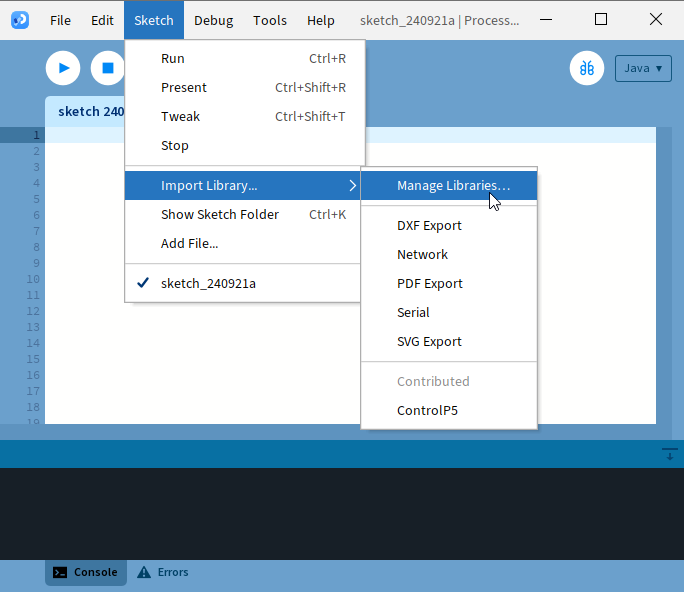
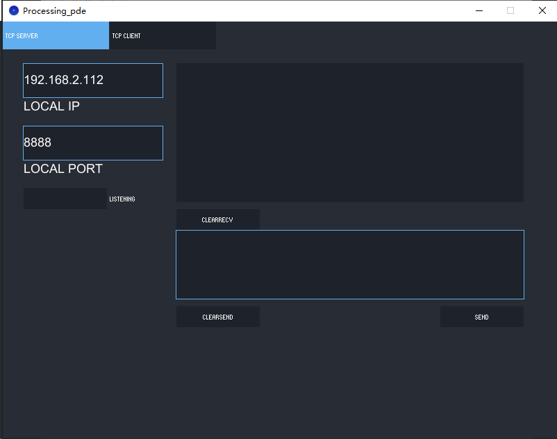
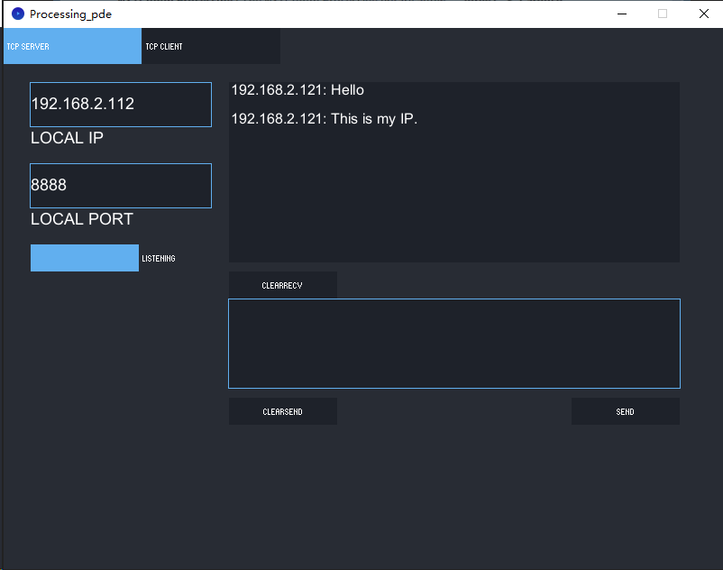
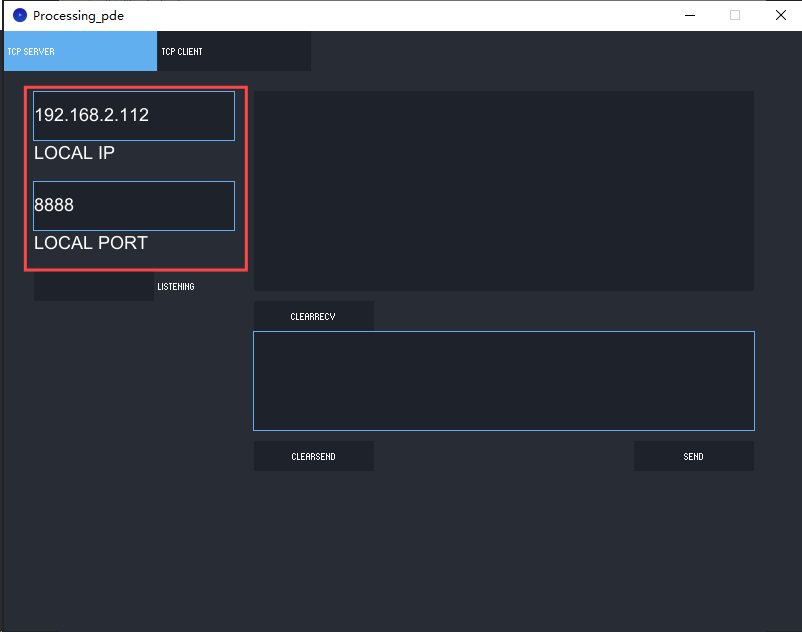
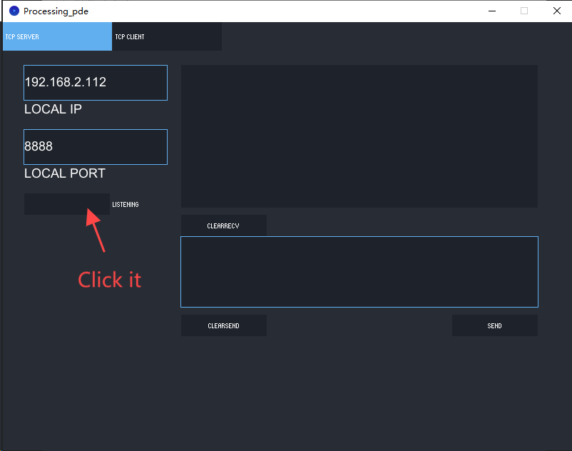
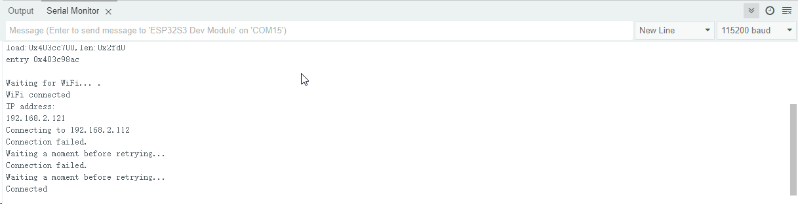
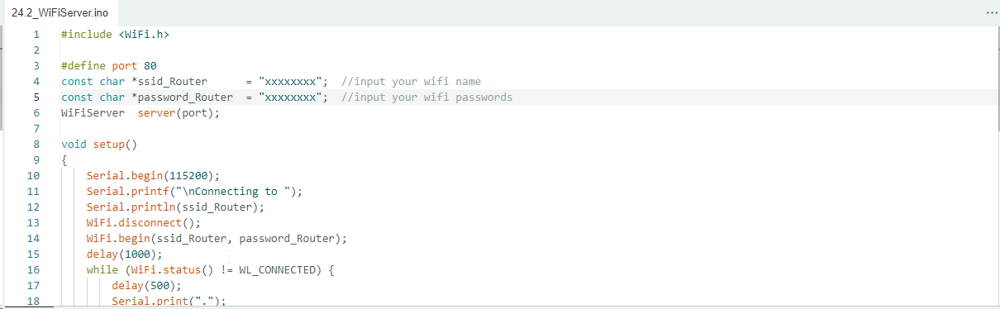
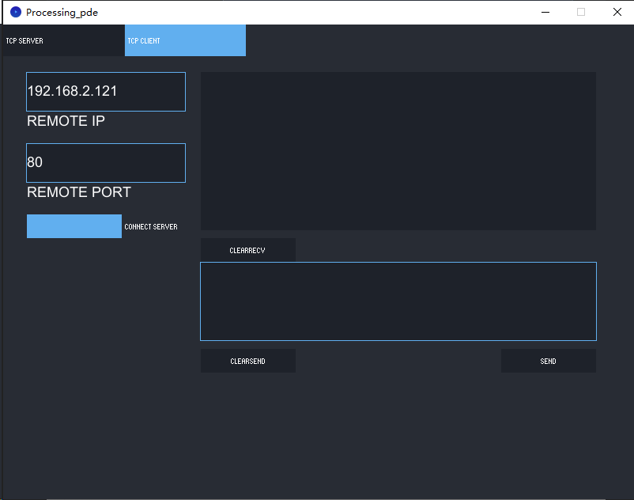

Chapter 24 TCP/IP
In this chapter, we will introduce how ESP32-S3 implements network communications based on TCP/IP protocol. There are two roles in TCP/IP communication, namely Server and Client, which will be implemented respectively with two projects in this chapter.
Project 24.1 As Client
In this section, ESP32-S3 is used as Client to connect Server on the same LAN and communicate with it.
Install Processing In this tutorial, we use Processing to build a simple TCP/IP communication platform. If you’ve not installed Processing, you can download it by clicking https://processing.org/download/. You can choose an appropriate version to downl oad according to your PC system.

Unzip the downloaded file to your computer. Click “processing.exe” as the figure below to run this software.
Use Server mode for communication
Install ControlP5.

Open the “Super_Starter_Kit_for_ESP32_S3\Sketches\Sketches\Sketch_24.1_ WiFiClient\sketchWiFi\Processing_wifi.pde”, and click “Run”.
The new pop-up interface is as follows. If ESP32-S3 is used as client, select TCP SERVER mode for sketchWiFi.
When sketchWiFi selects TCP SERVER mode, ESP32-S3 Sketch needs to be changed according to sketchWiFi’s displaying of LOCAL IP or LOCAL PORT.
When sketchWiFi selects TCP CLIENT mode, the LOCAL IP and LOCAL PORT of sketchWi Fi need to be changed according to the IP address and port number printed by the serial monitor.
Mode selection: select Server mode/Client mode.
IP address: In server mode, this option does not need to be filled in, and the computer will automatically obtain the IP address. In client mode, fill in the remote IP address to be connected.
Port number: In server mode, fill in a port number for client devices to make an access connection. In client mode, fill in port number given by the Server devices to make an access connection.
Start button: In server mode, push the button, then the computer will serve as server and open a port number for client to make access connection. During this period, the computer will keep monitoring. In client mode, before pushing the button, please make sure the server is on, remote IP address and remote port number is correct; push the button, and the computer will make access connection to the remote port number of the remote IP as a client.
clear receive: clear out the content in the receiving text box clear send: clear out the content in the sending text box Sending button: push the sending button, the computer will send the content in the text box to others.
Connect

Sketch
Before running the Sketch, please open “Processing_wifi.pde.” first, and click “Run”.

The newly pop up window will use the computer’s IP address by default and open a data monitor port.
Next, open Sketch_24.1_WiFiClient.ino. Before running it, please change the foll owing information based on “LOCAL IP” and “LOCAL PORT” in the figure above.

REMOTE_IP needs to be filled in according to the interface of Processing_wifi.pde. Taking this tutorial as an example, its REMOTE_IP is “192.168.2.112”. Generally, by default, the ports do not need to change its value.
Click LISTENING, turn on TCP SERVER’s data listening function and wait for ESP32-S3 to connect.
Compile and upload code to ESP32-S3 WROOM, open the serial monitor and set the baud rate to 115200. ESP32-S3 connects router, obtains IP address and sends access request to server IP address on the same LAN till the connection is successful. When connect successfully, ESP32-S3 can send messages to server.
ESP32-S3 connects with TCP SERVER, and TCP SERVER receives messages from ESP32-S3, as shown in the figure below.
Sketch_24.1_As_Client Code ^^^^^^ The following is the program code:
#include <WiFi.h>
const char *ssid_Router = "xxxxxxxxxxx"; //Enter the router name
const char *password_Router = "xxxxxxxxxxx"; //Enter the router password
#define REMOTE_IP "xxxxxxxxxxx" //input the remote server which is you want to connect
#define REMOTE_PORT 8888 //input the remote port which is the remote provide
WiFiClient client;
void setup() {
Serial.begin(115200);
delay(10);
WiFi.begin(ssid_Router, password_Router);
Serial.print("\nWaiting for WiFi... ");
while (WiFi.status() != WL_CONNECTED) {
Serial.print(".");
delay(500);
}
Serial.println("");
Serial.println("WiFi connected");
Serial.println("IP address: ");
Serial.println(WiFi.localIP());
delay(500);
Serial.print("Connecting to ");
Serial.println(REMOTE_IP);
while (!client.connect(REMOTE_IP, REMOTE_PORT)) {
Serial.println("Connection failed.");
Serial.println("Waiting a moment before retrying...");
}
Serial.println("Connected");
client.print("Hello\n");
client.print("This is my IP.\n");
}
void loop() {
if (client.available() > 0) {
delay(20);
//read back one line from the server
String line = client.readString();
Serial.println(REMOTE_IP + String(":") + line);
}
if (Serial.available() > 0) {
delay(20);
String line = Serial.readString();
client.print(line);
}
if (client.connected () == 0) {
client.stop();
WiFi.disconnect();
}
}
Project 24.2 As Server
In this section, ESP32-S3 is used as a server to wait for the connection and com munication of client on the same LAN.
Connect
Connect ESP32-S3 to the computer using a USB cable.
Sketch
Before running Sketch, please modify the contents of the box below first.
Sketch_24.2_As_Server

Compile and upload code to ESP32-S3 WROOM board, open the serial monitor and set the baud rate to 115200. Turn on server mode for ESP32-S3, waiting for the connec tion of other devices on the same LAN. Once a device connects to server success fully, they can send messages to each other. If the ESP32-S3 fails to connect to router, press the reset button as shown below and wait for ESP32-S3 to run again.
Processing： Open the “Super_Starter_Kit_for_ESP32_S3\Sketches\Sketches \Sketch_24.2_WiFiServer\sketchWiFi\Processing_wifi.pde”. Based on the messages printed by the serial monitor, enter correct IP address and serial port in Processing to establish connection and make communication.
Code
The following is the program code:
#include <WiFi.h>
#define port 80
const char *ssid_Router = "********"; //input your wifi name
const char *password_Router = "********"; //input your wifi passwords
WiFiServer server(port);
void setup()
{
Serial.begin(115200);
Serial.printf("\nConnecting to ");
Serial.println(ssid_Router);
WiFi.disconnect();
WiFi.begin(ssid_Router, password_Router);
delay(1000);
while (WiFi.status() != WL_CONNECTED) {
delay(500);
Serial.print(".");
}
Serial.println("");
Serial.println("WiFi connected.");
Serial.print("IP address: ");
Serial.println(WiFi.localIP());
Serial.printf("IP port: %d\n",port);
server.begin(port);
WiFi.setAutoReconnect(true);
}
void loop(){
WiFiClient client = server.accept(); // listen for incoming clients
if (client) { // if you get a client,
Serial.println("Client connected.");
while (client.connected()) { // loop while the client's connected
if (client.available()) { // if there's bytes to read from the client,
Serial.println(client.readStringUntil('\n')); // print it out the serial monitor
while(client.read()>0); // clear the wifi receive area cache
}
if(Serial.available()){ // if there's bytes to read from the serial monitor,
client.print(Serial.readStringUntil('\n')); // print it out the client.
while(Serial.read()>0); // clear the wifi receive area cache
}
}
client.stop(); // stop the client connecting.
Serial.println("Client Disconnected.");
}
}